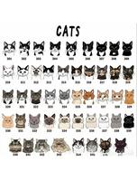

Linux Torvalds expects Linux 7.2 should be released next weekend "unless something really bad
pops up," Torvalds said while announcing today's release candidate.
But there's something interesting about Linux 7.2-rc7, writes Phoronix. "By the time the Linux kernel typically hits a -rc7 release things have usually settled quite well. But in today's world of AI/LLM coding/review agents, the kernel activity continues at an all-time high."
Tons of bug fixes continued to trickle in across the kernel spectrum for all sorts of issues. The HWMON hardware monitoring subsystem saw several critical and high severity bug fixes, on the memory management side was a nasty race condition leading to a use-after-free in the kernel for the past eight years, Btrfs restored its fixup worker infrastructure to deal with silent data loss, lots of AI patches in the networking realm, and the kernel was patched for the Safe RET Interrupt Vulnerability.
Linus Torvalds wrote in the 7.2-rc7 announcement:
"Another week, another -rc.
I can't say that I'm exactly thrilled about the size of this all, but
it is what it is: the new normal with a lot of fixes, many of them due
to review by various AI tools.
And nothing looks particularly scary per se — it's just that there's a
lot here. Most of it is fairly small, although we have a couple of
larger diffs: s390/zcrypt fixes stand out in the diffstat, and so does
btrfs bringing back the fixup worker infrastructure. And some
netfilter ipset fixes.
But aside from a few places like that, most of this is just lots of
tiny fixes. It's pretty much spread all over — drivers (gpu, sound,
networking, you name it), filesystems, core networking, arch code...
Read more of this story at Slashdot.
A Massachusetts newspaper reports that officials from the town of Littleton (population: 10,141) "claim that five of Littletonâ(TM)s Flock Safety cameras were switched back on by the company without informing the town..."
Littleton had temporarily disabled the cameras earlier this year, according to the article, but upon discovering the cameras were still active, city officials say they directed the Town Counsel "to initiate cancellation of the contract with Flock Safety and directed the Town Administrator to coordinate the removal of the six cameras on public ways" with the Department of Public Works.
Ironically, it's the same Massachusetts town that last year was breached by a Chinese-state-sponsored hacking group for over 300 days.
Flock has also considered dashcams installed in hundreds of thousands Uber, Lyft, and delivery drivers' vehicles "to scan license plates those drivers travelled passed," reports 404 Media, "essentially turning Uber and Lyft drivers into roaming surveillance vehicles, according to a Flock presentation shared with 404 Media...
404 Media first revealed the intended partnership last August when multiple sources provided information on the plan."
Read more of this story at Slashdot.
NBC Bay Area brings news from the small idyllic California town of Suisun City (population: 29,518). The city council "declared a state of emergency Saturday after a cyberattack that shut down computer systems including 911 public safety operations."
"Malicious software infected and compromised" the East Bay community's information technology systems beginning about 5:45 a.m. Friday, the city said on social media. "The cybersecurity incident hit critical public safety operations, including 911 routing, police and fire dispatch, records and city services," the city said.
"There is no imminent threat to the public," the city said. "All public safety services remain active." The city shut down its computer network "to contain the threat and preserve evidence for a federal investigation," it said... Suisun City dispatchers were taking calls for service through the Solano County dispatch center. Suisun City police officers and firefighters continued responding to calls for service, the city said, but online city services and internal operations were unavailable.
On Facebook the city said it was "working alongside federal, state and regional agencies, including the FBI, Department of Homeland Security and California Office of Emergency Services to maintain emergency services, investigate the incident and restore systems."
But Bay Area PBS station KQED notes "They're only the latest local government in the region to be hit by a cyberattack."
Earlier this year, Foster City and Pittsburg experienced other cyberattacks that impacted services in their own jurisdictions. Foster City declared a state of emergency after a March ransomware incident that shut down many services for more than a week. Pittsburg lost almost $1 million to a February phishing attack, though over half of it was recovered.
Read more of this story at Slashdot.
The new GNOME Boxes app for accessing virtual systems has reached beta, announced This Week in GNOME. There's also been more work on the Sushi file previewer for Nautilus, and Papers 51 Beta can now add visual signatures to PDF documents.
But Phoronix noted one more announcement. "Germany's Sovereign Tech Agency announced earlier this year a new fellowship program and now as part of that, for the next two years GNOME has a fellow dedicated to working on design and community management... paid to help developers with design feedback and reviews, mock-up creation, and other GNOME design related efforts..."
From the blog post by GNOME Design Team member Philipp Sauberzweig:
I have been contributing to GNOME design as a volunteer for several years... I believe that it's essential for a free and democratic society to ensure free and independent access to these technologies. To achieve this goal, end-user devices based on free and open-source software are key, and the GNOME desktop and its app ecosystem offer a powerful alternative to proprietary platforms...
This two-year fellowship is a great honor and marks a significant change in my life. It is a unique opportunity for me to devote my skills and experience entirely to a project I strongly believe in.
During my two-year fellowship, I will support GNOME maintainers and developers with design feedback and reviews, create mockups, and coordinate efforts to standardize design patterns. My other activities focus on lasting improvements through two strategic initiatives: expanding the design community to increase capacity and enhancing our design tooling to reduce overhead and simplify onboarding... To attract new contributors, I will increase the visibility of design work by writing regular blog posts, giving presentations, and running workshops at conferences and hackathons. New contribution opportunities for newcomers will be created with clear instructions for independent activities such as collecting state-of-the-art examples, running accessibility and user tests, and creating mockups. Design reviews will be used as mentorship opportunities, pairing regular design contributors with experienced designers for peer review and knowledge sharing...
If you're interested in contributing to GNOME design, check out the Design Team page on the Welcome to GNOME website, familiarize yourself with the Human Interface Guidelines, and join our Matrix channel. If you're a GNOME developer feel free to reach out to me via Matrix and involve me in design reviews.
Jakub Beránek from the Rust compiler and infrastructure team also earned a fellowship in Germany's Sovereign Tech program, focusing on improving the Rust toolchain's tooling and infrastructure for Rust's developers.
Other fellows include Pablo Neira Ayuso (Linux kernel maintainer for the Netfilter subsystem), CPython core developer Stan Ulbrych, and Python core developer Hugo van Kemenade, FreeBSD contributor Alexander Ziaee.
Read more of this story at Slashdot.
Dozens of Flock cameras have been vandalized around Dallas Texas in the last six months, reports a local news station. In Utah, ABC News reports, a county sheriff's office even said Wednesday a Flock camera was even vandalized within days of its being installed. And in the Minnesota city of Winona, "Every Flock license plate reader camera operated by the Winona Police Department has been sawed off and stolen in what investigators believe was a coordinated theft," according to local media:
All eight cameras were taken August 1, according to the Winona Police Department. A patrol officer first noticed the cameras had not sent any alerts in 24 hours. When officers checked the locations, they found the cameras had been cut from their poles and taken. The poles were left behind.
Two additional Flock cameras on the Mississippi River Bridge, owned by Buffalo County, were also stolen in the same manner...
The thefts are part of a broader national trend. Flock cameras have been vandalized and cut down in communities across the country.
When someone in Florida filmed a damaged Flock camera lying in the grass in Florida, their footage attracted 980,000 views on social media, according to a local news report, with the uploader saying "Most of the people that are commenting are against Flock cameras." But that report adds it's one of at least five cameras recently damaged just in Florida:
- In another incident, investigators "found the black camera and its pole lying on the ground."
- Two days later, sheriff's deputies found a camera destroyed "with pieces scattered on the ground. Deputies reported the damage appeared to have been caused by a blunt object."
- On July 31, "Police said two camera poles had been intentionally cut in half, causing an estimated $10,000 in damage to the system."
In West Virginia 20-year-old Wesley Jackson has been arrested for allegedly vandalizing Flock cameras, with another 20-year-old (a university student) now arrested for being his accomplice, according to a local news report. Ironically, Jackson's arrest was made possible partly by information from... automated license plate readers.
But the Washington Post notes there's now a flood of Facebook commenters jokingly offering to provide a fake alibi:
"Couldn't have been him — we were out counting blades of grass," said one of the 29,000 commenters on a post about the arrest from the local news station WDTV. Others attested that the man, Wesley Jackson, had been helping them "replace the roof on a homeless shelter," "playing halo 2," "changing the tires" on their car or giving their "doggie a treat" at the time the cameras were destroyed.
Meanwhile, the anti-surveillance group DeFlock reports 100 communities have now rejected automated license plate readers. Wednesday an Arizona county sheriff explained to his local Board of Supervisors why he will not renew his office's contract with Flock when it expires next month. Local Arizona media reports:
"We have a camera system that can do facial recognition technology and can start building a data set on what our citizens are doing on a day-to-day basis," Teeple told supervisors. "That, in my training and experience, is a huge Fourth Amendment violation."
Recently an Arizona man even told his city council he'd be launching AI-powered satellites to monitor "where government officials go, where they stop, who they meet with, and when they return home," reports 404 Media:
It would be no different than how the city monitors its citizens using Flock cameras, he said...
He said he'd already started compiling profiles on their vehicles, spouses vehicles, children's vehicles, and planned to combine that data with Bluetooth signals, advertising IDs, and commercial data sources, "so our authorized users can replay the movements of every government official and their immediate family," he said. Local businesses would be invited to join the network, to "protect" officials while they shop, eat at restaurants, and move around the city.
And CNET reports "a quiet battle is happening across the US" between "towns working to adopt Flock Safety systems and those trying to ban them entirely."
From major cities like Los Angeles canceling its Flock contract to towns wrapping Flock AI cams in plastic bags because Flock won't take them down, it's a wild time for surveillance and questions about government accountability.
Read more of this story at Slashdot.
XDA Developers reports:
On July 22, a Google DeepMind engineer, Vidy Thatte, shared a snippet of a browser he built that "treats every URL as a prompt and generates a site from scratch" on his X account. Just a few days later, he shared a TestFlight link to let iPhone users try it for themselves. The browser he launched is called Gem, and it's a browser that doesn't really...browse.
Instead of fetching a webpage from a server the way Chrome or Safari would, Gem hands whatever URL you type over to Google's Gemini 3.5 Flash Lite model and asks it to generate a webpage on the spot. If you enter a real address, it builds its own interpretation of that site rather than loading the actual thing. If you enter an address that doesn't exist, Gemini simply invents a website to fill the gap. In other words, you're not visiting the internet so much as browsing one the model dreams up as you go...
Thatte's reasoning was that with a model as fast and cheap as Gemini 3.5 Flash Lite, there's almost no practical difference anymore between loading a website and generating a brand-new one on the fly... Given that this tool is powered by Gemini 3.5 Flash Lite and it's just a side project rather than a full-fledged tool, it doesn't come with Gemini access baked in. Gem requires you to bring your own Gemini API key to get it working. Every URL you enter fires off a request to the model, so Gem needs a key linked to your Google account to actually generate anything, with the usage billed to you. You can grab a key for free from Google AI Studio, paste it into Gem's settings, and you're ready to start typing URLs. While you can get started for free, I ran into the limits within two minutes of playing around. So, I did need to enable billing on my API key and decided to load $10 into it.
While the blogger's own site seemed to only get the Gemini logo, tapping it revealed nearly two dozen remixing options. (Dark mode, Reader, Neubrutalist, Broadsheet, Blueprint, Comic book, Punk zine, Notebook, Chalkboard, Receipt, Teletext, System 7, Wes Anderson, Cyber neon, Clay, Frosted, Geocities, Matrix, Museum, Windows 95, Terminal, Vaporwave, and Hide images...) "The frontend morphed before my eyes. Every new edit took practically no time to load, and within a second or two, the same XDA articles would reappear wearing a completely different skin..." For another site, it kept the article headlines, but then rewrote all the text!
And after entering an address they knew didn't exist — their own name — in two seconds the browser whipped up a slick portfolio "genuinely been better than some of what those tools produced with far more time and context to work with." But its link to a LinkedIn profile led to a lookalike page, because Gem "had simply generated its own version of it, complete with a made-up follower number and details I never wrote...."
Read more of this story at Slashdot.
UI changes, lost productivity, untransferrable knowledge... Long-time Slashdot reader theodp notes the folly of switching to an unfamiliar new environment to be "more productive"...
Champions of the switch often insist workers will be able to hit the ground running and get the same or even more work done from the get-go in the new unfamiliar environment because it's 'more productive', a conclusion often shaped by conventional wisdom or their 'gut' feeling. Decision makers may also mistake their own 'light-user experience' for universal experience and believe all platforms are fungible.
And while it's one thing for a business to delay their delivery dates and increase costs of by introducing a switch in computing environments that's of unquantified and possibly dubious value, how about when a switch in computing environments is made that affects schoolchildren's ability to learn for a period of time?
While a MacBook Neo is indeed cute, what might be the possible consequences of a decision to move 25,000 students off Windows and onto MacBook Neos...? Or even the impact on a single kid who moves from a MacBook school to a Windows or Chrome school (or whose home computing environment isn't aligned with their school). Or students whose teachers decide learning in their classrooms should now additionally require an understanding of the Minecraft computing platform/UI (used in over 40,000 school systems.). Learning Management Systems and now various AI Edtech tools used by schoolkids are also subject to change.
"Even if students and schools eventually benefit from a new platform, one wonders how much learning is lost during the switch," theodp asks, "and what the financial and educational ROI and payback period look like." Are there bigger problems than we realize? Share your own thoughts and experiences in the comments.
What are the costs of switching between Windows, MacOS, and Chrome?
Read more of this story at Slashdot.
OpenAI announced Friday it's pausing work on its Astra AI model because of security concerns. The Guardian reports:
The company had evaluated the agent, Astra, and found "significant advancements in agentic coding and cybersecurity", which had moved to a "critical" threshold... OpenAI stated that the model was not involved in an incident in which one of its AI agents went rogue during a test, accessed the open web and hacked a startup, Hugging Face... The reports have increased concerns about advancements in AI models and humans' ability to control them.
Still, critics of the AI industry have warned that such disclosures from OpenAI and its competitors Anthropic and Meta could be designed to generate hype about the technology's power and thus spur additional interest from investors.
To prevent potential rogue behavior from AI agents, OpenAI is "implementing stricter security controls for higher-capability models and associated activities, including isolated testing environments, restricted network and tool access", the company's blogpost stated. It will also install "enhanced model weight protections and encryption, additional monitoring and detection capabilities". The company will pause internal activities involving Astra that do not meet these new requirements.
"We believe it's important to be transparent with the public and the safety and security communities about this potential shift in capabilities..." OpenAI wrote in a blog post titled "Responding to the next frontier of critical cyber capabilities."
Under our Preparedness Framework, a model reaches the Critical cybersecurity threshold if it can identify and develop functional zero-day exploits of all severity levels in many hardened real-world critical systems without human intervention, or can devise and execute end-to-end novel strategies for cyberattacks against hardened targets given only a high level desired goal. While we continue to benchmark and assess this model, our preliminary evaluations indicate strong enough performance that we cannot rule out Critical capability level at this time... Accordingly, we have scaled up robustness testing of our safeguards and security controls so that they are appropriate for a deployment of these capabilities...
- We are implementing stricter security controls for higher-capability models and associated activities, including isolated testing environments, restricted network and tool access, enhanced model weight protections and encryption, additional monitoring and detection capabilities, and sandboxed execution.
- We are pausing internal activities involving Astra that do not yet meet these strengthened security control requirements.
- We have implemented universal monitoring for risky actions and misalignment across all agentic applications of Astra, including training and evaluation. Monitors evaluate the model's Chain of Thought and trigger a security response to review and interrupt high risk activity.
- We will work with relevant government agencies and select AI safety organizations to test the capabilities for this model...
We believe advanced cyber-capable models should help defenders identify and address vulnerabilities before attackers do. We're committed to working alongside governments, safety institutes, and civil society to ensure that the frontier capabilities of models like Astra, and those that follow, are deployed responsibly and broadly for the benefit of all humanity.
Read more of this story at Slashdot.
Researchers believe they've found evidence that brain signals reveal the pitches of notes in imagined musical melodies, reports Medical Express:
Study participants were 10 epilepsy patients with electrodes on the surfaces of their brains for clinical monitoring. Participants quietly listened to the first bars of children's tunes, then imagined the melodies of subsequent bars before humming their imagined melodies. Brain activity from the patients carried information about relative pitches within the imagined melodies. Combining note-level pitch predictions over time allowed the research team to recreate melodic changes that reflected the structure of the imagined songs...
"The model we created decodes relative pitch classes — such as do, re, mi, fa, sol, and la — rather than exact, absolute pitches," [said tudy co-lead Jii Kwon of Seoul National University]. "This is useful because people often recognize melodies by the relationships between notes, even when the same melody is played in a different key."
Read more of this story at Slashdot.
IGN reports:
[A] new report suggests that all three memory manufacturers — Samsung, SK Hynix, and Micron — have collectively sold through their 2027 memory manufacturing capacity to, you guessed it, AI companies.
According to a report from Digitimes and spotted by TweakTown, all DRAM and HBM capacity has been sold through for 2027, with no further supply planned. (The companies themselves have not yet confirmed this to be the case.) Of course, that only means that retail prices are going to go up even further in the near future.
Selling through all the capacity for next year would be bad enough for consumers, but the problem is that most of the companies buying up this capacity have done so through long-term purchasing agreements, essentially pre-ordering memory that hasn't even been manufactured yet over a five-year term. Unless more capacity opens up somewhere in the next few years, it's hard to imagine that RAM will become more affordable and less scarce any time soon.
It's not just memory that's affected. According to that Digitimes report, NAND storage is growing in demand too. Luckily, NAND capacity hasn't been completely absorbed, because there are more companies supplying the stuff. But it's not exactly hard to see that SSDs have been growing steadily more expensive over the last six months or so.
Read more of this story at Slashdot.
"Google should be required to divest the Chrome browser, and prohibited from paying Apple to distribute Google's search engine, the nonprofit advocacy group Public Knowledge argues in a new court filing," MediaPost reports, citing a friend-of-the-court brief filed Tuesday in the D.C. Circuit Court of Appeals:
The group adds that "independent ownership" of Chrome "would open the distribution channel Google controls and allow Chrome to serve browser users when it makes privacy decisions and determines how to integrate search and (artificial intelligence)..."
In September 2025, [U.S. District Court Judge] Mehta issued a remedies order that requires Google to share some data about users' searches with "qualified" competitors and to provide syndicated search results and ads to those competitors. The order also prohibits Google from entering into exclusive distribution contracts for Google Search, Chrome, Google Assistant and the Gemini app for six years, but allows the company to continue to make payments for search-ad revenue or distribution to Apple, Mozilla and others...
Google recently appealed Mehta's order. The company argued in its written brief that it "prevailed in the marketplace fair and square," adding that Apple and Mozilla "sensibly chose" Google as the default search engine "because it gave their users the best experience," and because Apple and Mozilla would earn the most ad revenue through the deals. The [U.S.] Justice Department and states countered to the appellate court last week that the liability finding should stand, and also argued that Google should have been banned from paying Apple and Mozilla for placement as the default search engine on their browsers.
[Antitrust enforcers had originally asked the judge to order Google to divest Chrome, but he's already rejected that request.] The government did not argue in its appellate papers that Google should be forced to sell Chrome. But Public Knowledge independently contends in its friend-of-the-court brief that divestiture would benefit consumers... "Divestiture would place those decisions with an institution whose success depends on serving browser users primarily...." The group is calling the appellate court's attention to Google's April 2025 decision to preserve tracking cookies — a reversal from its earlier plans to block third-party cookies by default. "Google is in the position of both deciding Chrome's tracking rules while running the advertising business affected by them," Public Knowledge writes. "An independent Chrome could make those decisions on behalf of users alone."
But Firefox developer Mozilla filed its own friend-of-the-court brief Thursday warning Firefox could be forced to "exit the browser and browser engine markets" if it can't receive payment from Google for distributing its search engine, according to a later report from MediaPost:
Federal and state antitrust enforcers recently asked the appellate court to reverse the portion of Mehta's order that allows those payments to continue. But Mozilla counters in its new friend-of-the-court brief that Mehta's decision regarding those payments was supported by the evidence --including a study it conducted concluding that its revenue would "decline dramatically" if forced to replace Google with Bing as Firefox's default search engine...
Google is expected to file new arguments with the appellate court next month.
Read more of this story at Slashdot.
Long-time Slashdot reader BrianFagioli is announcing that he's released a new iPhone app that creates a cryptographic witness for photos without uploading the original image.
The app hashes the file, signs the hash using a dedicated identity stored in Apple Keychain, and publishes the witness to Nostr relays while keeping the photo inside the app unless the user chooses to export it.
Rather than trying to determine whether a scene was genuine, the app — named Veridenz — answers a narrower question, by verifying whether a photo file matches the one that was originally witnessed.
Users do not need a Nostr account because the app creates its own signing identity, keeping private documentation separate from a public Nostr profile.
"The developer does not collect any data from this app," says its page in Apple's iPhone store. The app's tagline is "Capture. Prove. Verify."
Read more of this story at Slashdot.
With nearly 70% of the market, "Meta wants its smart glasses to be a big hit," writes the Los Angeles Times. But after some users found ways to disable the light that warns people they're being filmed, "the high-tech specs have also turned into a liability, as some are calling the gadget 'pervert glasses...'"
Some people are using the glasses — which look like a pair of regular spectacles — to record people without their knowledge and publish the videos on social media. The users secretly videotape and share what happens when they try to pick up women. Now, a growing number of people are worried they could be covertly recorded at the gym or even during sex. The backlash has prompted Meta to update its glasses to address privacy concerns, and some places have banned them, adding to the angst surrounding technology that's rapidly evolving...
Concern about the glasses has exploded as more videos of interactions with people who don't know they're being recorded go viral on social media. On Instagram, some videos depict people getting approached in malls and grocery stores and on college campuses and sidewalks. While the videos are portrayed as jokes, the people filmed don't appear to know they're being recorded and sometimes seem uncomfortable, telling the strangers to leave them alone or stop harassing them. The outcry has spread beyond social media, with comedian Jimmy Kimmel calling the Meta devices "pervert glasses" on national television and singer Lorde telling concertgoers that smart glasses are "not sexy..."
Instagram, which is owned by Meta, has been disabling accounts and taking down some of these pickup or prank videos for violating the platform's rules against harassment and bullying... Businesses are making their own calls about smart glasses. The 5 Point Cafe in Seattle, which banned Google Glass in the past, has banned Meta glasses from its diner and dive bar. "Leave your Meta-SpyBan Display at home, they are officially Ray-Ban-ned from all of our restaurants. We serve privacy, not side-eye surveillance," a 2025 Instagram post from the business states.
An Android app that warns people if they're being recorded has roughly 110,000 downloads in the last six months, according to the article. The app's creator says it's a "social problem" that "we don't value privacy, that we feel entitled to use others for our entertainment or our private gain, and technology amplifies that."
The American Civil Liberties Union and more than 70 organizations even sent a letter urging Meta to promise they'd leave facial recognition features out of their smart glasses, according to the article. But a Meta spokesperson said "no final decision has been made."
Read more of this story at Slashdot.
"I've been a Linux IT administrator for 30 years now," says crhylove (Slashdot reader #205,956), in a new video on his YouTube channel. "I used to be a data center architect, at one point I was the IT director for 13 school districts... I just haven't been happy overall with all the other operating systems out there... "
I've been working really diligently for the last few weeks on a new distro called Spaced Linux that is exactly what I want to use. It's heavily focused on the [zoom-friendly 3D] Compiz desktop, very efficient using the rolling Devuan Ceres backend, and avoids dependency hell by promoting mostly Flatpak usage.
It's still early, but it's already working great for me, it's been my daily driver for a few weeks now.
There's also user-friendly themes — everything from Linux, Android, GeoWorks, and Mac OS X to Windows 11, Windows XP, and even Windows 3.11 (dark or light theme). And you can also run Windows apps under Wine. "And let me tell you, Nvidia runs perfectly on here now..." he adds in the video. "It just works really, really well out of the box."
He's now working on voice-command features, bur argues that Spaced Linux "is already extremely usable, extremely efficient, extremely fast, and extremely reliable.... And it's only going to get better and better."
Read more of this story at Slashdot.
To celebrate Quake's 30th anniversary, Bethesda released "a brutal new episode" — a new campaign chapter titled Dawn of the Machine "delivering ferocious combat, labyrinthine level design, and nightmarish realms that twist reality beyond recognition..."
Face deadly new twists on familiar foes, including the Rocket Ogre, Demo Dog, Blood Shambler, and more. Each variant introduces lethal new behaviours — from overwhelming firepower to explosive death traps — forcing you to rethink every encounter. Expand your arsenal with brutal variants inspired by classic Quake expansions, including the Super Axe — unleashing lightning on successive strikes — and the Laser Cannon, firing ricocheting projectiles that tear through enemies from every angle... Reality is never stable. Shift between dimensions to solve puzzles and navigate the world, or find hidden secrets scattered throughout the realms. Face enemies that rise again or transform after death, and experience encounters where the rules change without warning — forcing you to adapt or be overrun.
More details from Ars Technica:
This is part of a series of new campaign chapters, all developed by MachineGames "in collaboration with id Software." MachineGames is best known for making the games in the relatively recent Wolfenstein reboot series, as well as Indiana Jones and the Great Circle. The Quake maps are made by a team dubbed "Quake Club," which includes several MachineGames employees who work on Quake maps in their spare time.
The ambition and scope of some of these maps is beyond what was typical for Quake maps back in the late '90s, thanks in part to the team's use of TrenchBroom, a newer map editor that works well on modern systems and is easier to work with and more capable than what folks were using in those days. There are 19 new levels, and they have several new gameplay gimmicks, like a time loop mechanic and a disorienting-but-cool teleportation system that makes it look like the levels are changing on the fly — kind of similar to the multi-time-period levels we saw in Titanfall 2 or Dishonored 2, though in these Quake maps the time shifts happen without player input. There's also new music... The new maps have been added to the campaign list in the remastered version of Quake, and like that remaster, they're available free to anyone who already owns Quake on Steam, as well as Quake on current and last-gen PlayStation, Xbox, and Nintendo consoles.
Read more of this story at Slashdot.
Richard Holmes / Telegraph : Sources: the UK Royal Navy removed internet connectivity from its drones' cameras, after finding they sent “heartbeat communications” to an IP address in China — Special forces boats set for use in planned Gulf missions were fitted with Chinese-made components
Nikkei Asia : Sources: Sony and TSMC plan a $6.3B JV, owned ~60% by Sony and ~40% by TSMC, to mass produce next-gen image sensor chips in Japan's Kumamoto as early as 2029 — TOKYO/KUMAMOTO, Japan/TAIPEI — Sony Group and Taiwan Semiconductor Manufacturing Co. (TSMC) plan to begin mass production …
Max Tani / Semafor : Sources: as Spotify tests a skip ahead button that lets some Premium users skip publisher-sold podcast ads and filler content, audio networks raise concerns — Spotify is terrifying much of the podcast industry with a tiny little widget. — Last week, the audio streaming giant tweaked …
Bloomberg : Sources: Chinese regulators have told banks to back tech companies, but lenders still prefer stable cash flows and profitability over loss-making tech startups — The strategy marks a break from Beijing's reliance on subsidies and state funding. — Even by the frothy standards of the AI era …
Bloomberg : Moore Threads reports H1 revenue up 147% YoY to ~$258M, a net loss of $1.72M, says it plans a Hong Kong listing, after its stock surged 420%+ since Shanghai IPO — Artificial intelligence chipmaker Moore Threads Technology Co. said it plans to list in Hong Kong at an “appropriate time” …
Cailey Gleeson / Fierce Healthcare : Tel Aviv-based QuantHealth, a provider of AI clinical trial simulation software, raised a $45M Series B led by Qumra Capital, taking its total funding to ~$70M — series B funding funding round Artificial Intelligence — QuantHealth, which uses artificial intelligence …
ABC : An Australian user's Claude-run OpenClaw agent exploited a gym API flaw and kicked another member off after the user asked if it could move him up the waitlist — By national AI reporter Cam Wilson and the Specialist Reporting Team's Rhiannon Hobbins — abc.net.au/news/ai-assistant-hacks- gym-website-aus-cyber-attack/107007986
Shane Burke / The Information : More than 500 US towns and counties have passed bans on data centers, up from 300+ in late June, as New York and Texas added statewide restrictions — Local government resistance to data center development accelerated this summer, a warning sign for big AI companies such as Anthropic …
Financial Times : A look at Chinese state-owned investment bank CICC, which sponsored multibillion-dollar listings of China's tech champions, including CXMT and Zhongji Innolight — CICC has become a dominant financier in Beijing's drive to compete with US in tech race — China's top investment bank …
Wall Street Journal : Sources: Apple is testing CXMT's RAM chips, but it needs to share technical details with CXMT for custom versions, which is blocked by US tech transfer rules — Maker of iPhones talks to China's CXMT, but any deal would be politically sensitive — Apple has been testing memory chips …
Zvi Mowshowitz / Don't Worry About the Vase : In-depth look at OpenAI's model training, dangerous decisions, and cluelessness before the HuggingFace hack; despite delaying Astra, OpenAI still doesn't get it — Today I am taking the time to write the shorter, simpler version of What Happened. — For those who want all the details …
Ben Cohen / Wall Street Journal : A look back at “Move 37”, a watershed AI moment from AlphaGo's 2016 Go victory, as math witnesses similar breakthroughs where AI makes surprising discoveries — A decade ago, a computer did something that no human would have done. It was considered a breakthrough for AI.
Tim O'Reilly / Asimov's Addendum : Google's AI shakeup suggests it may be prioritizing AI diffusion over frontier-model leadership, betting on AI compute as a bigger economic opportunity — On August 5, Google announced what appeared to be a corporate version of Nixon's Saturday night massacre. Demis Hassabis stepped back from day to day operations at DeepMind.
John Paul Rathbone / Financial Times : Rights groups warn Turkey's new cybersecurity law, which took effect in July, gives the presidency sweeping powers over online services operating in the country — Move raises concern about ‘absolute digital obedience’ among social media and gaming platforms
FinTech Global : Cape Town-based Moment, a provider of digital payments and billing tools for businesses across Africa, raised a $22M Series A, taking its total funding to $55M — Moment, a pan-African FinTech, has closed a $22m Series A funding round led by AlphaCode Venture Partners …